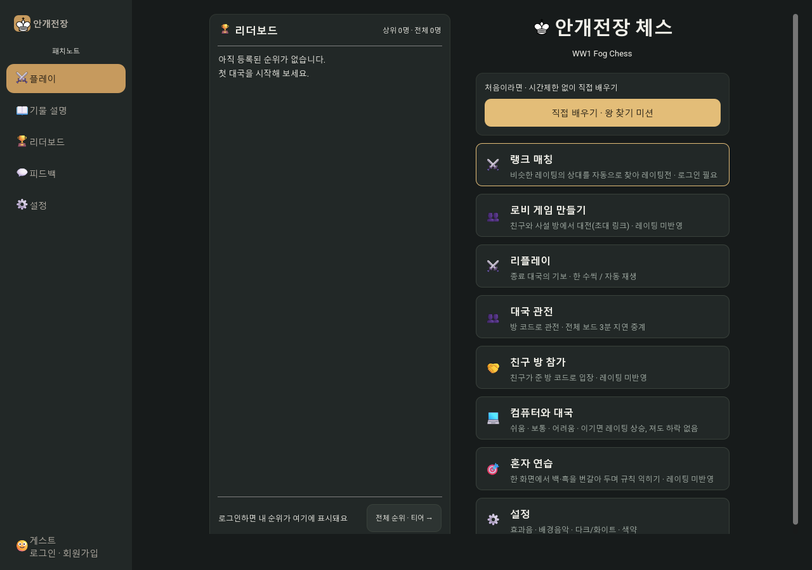
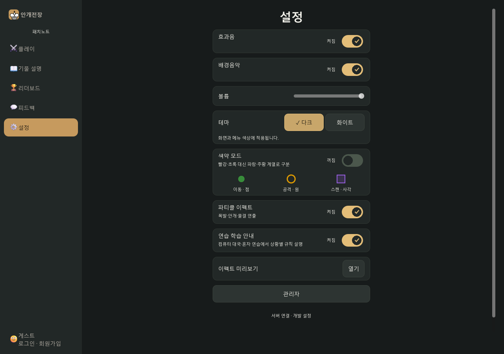
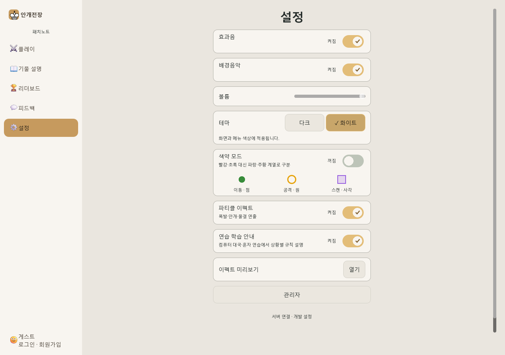
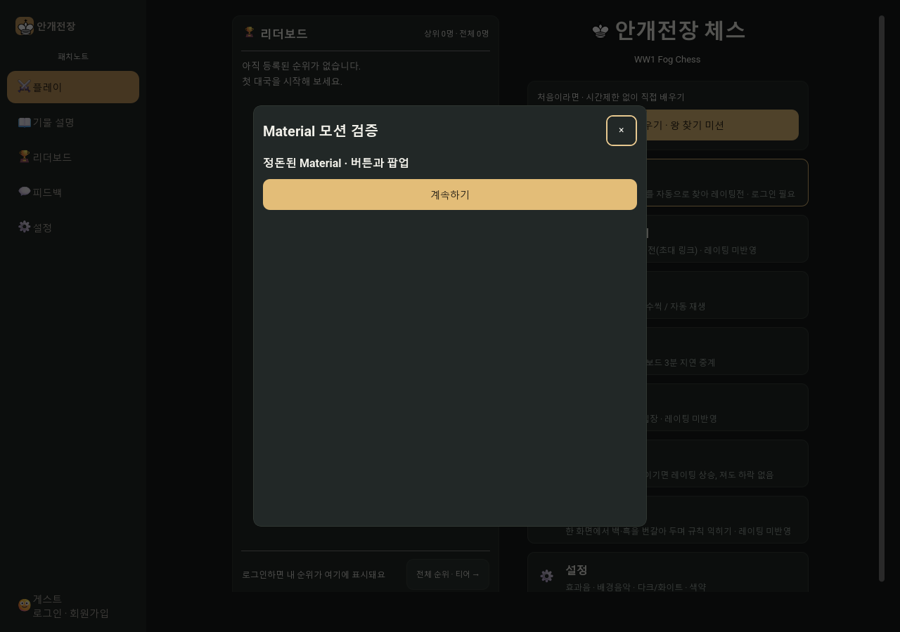

FOGCHESS · 2026.10.23 · LOCAL GODOT
정돈된 Material, 게임에 적용
작고 빠른 반응과 일관된 움직임으로 조작감을 다듬었습니다. 체스판·기물·지형 디자인과 게임 규칙은 유지했습니다.
적용한 상호작용
- 버튼: 누른 지점에서 퍼지는 물결과 1.5% 표면 압축. 실제 클릭 영역과 글자 배치는 고정됩니다.
- 메뉴 선택: 금색 선택 표시가 새 메뉴로 부드럽게 이동합니다. 빠르게 다시 선택하면 마지막 목적지를 따라갑니다.
- 팝업: 96% 크기와 아래쪽 12px에서 자연스럽게 등장하고 배경이 짧게 어두워집니다. 등장 중에도 닫을 수 있습니다.
- 설정 스위치: 손잡이 이동과 색 전환을 연결했습니다. 설정 값은 즉시 반영됩니다.
- 상태 변화: 준비 완료, 복사 확인, 매칭 단계와 턴 변화에 짧은 강조를 더했습니다. 결과 패널은 해당 결과에 처음 진입할 때 등장합니다.
작은 요소는 강성 1400·감쇠비 0.9, 패널은 강성 700·감쇠비 0.9의 스프링을 사용합니다. 물결 확장은 360ms, 해제 페이드는 180ms입니다. 새 모션은 명령 전송을 지연시키지 않습니다.
검증 결과
| Material UI | 32개 통과 |
| 보드 UI | 128개 통과 |
| 게임 통합 | 255개 통과 |
| 기존 UX | 58개 통과 |
| 합계 | 473개 통과 |
보드·기물·지형·폰트 등 보호 파일 328개의 SHA-256이 변경 전과 일치합니다. 연속 입력, 눌림 취소, 비활성화, 공유 테마 격리, 팝업 조기 닫기와 모바일 폭 전환을 확인했습니다.
검사는 네이티브 Godot과 크기를 조정한 테스트 창에서 진행했습니다. 실제 모바일 기기와 웹 배포본은 검증하지 않았습니다. 보드·기존 UX 검사 종료 시 ObjectDB 2개 정리 경고가 각각 남았으며, 기능 검사는 통과했고 스크립트 오류는 없습니다. 운영 배포·웹 재빌드·Git 커밋은 수행하지 않았습니다.
실제 실행 화면

홈 · 기존 디자인과 배치를 유지한 상태

다크 테마 · 스프링 이동과 체크 표시가 적용된 설정 스위치

화이트 테마 · 같은 상호작용과 테마별 대비

팝업 · 등장 후 기존 위치와 크기로 복귀
위 이미지는 실제 실행 캡처이며 정지 화면입니다. 움직임은 새로 실행한 Godot 게임에서 확인할 수 있습니다.
개발 기록
검증 기록 · 소스 변경 내역
재검사: python tests/run_material_ui_smoke.py --capture
원본 백업: ../backups/2026-10-23/before-material-motion/